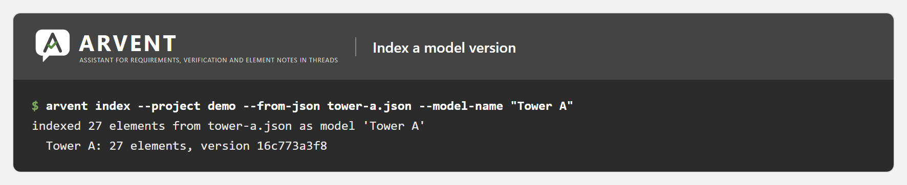
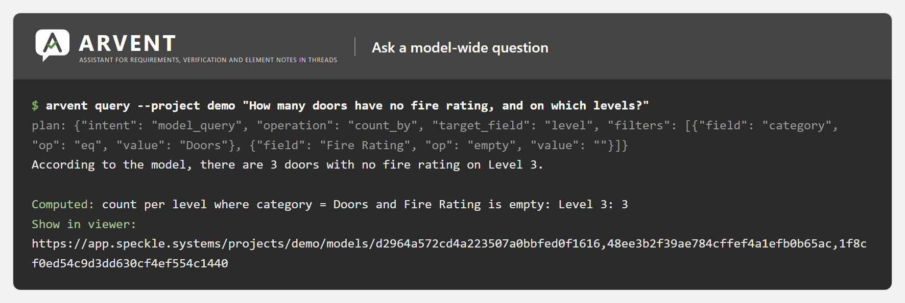
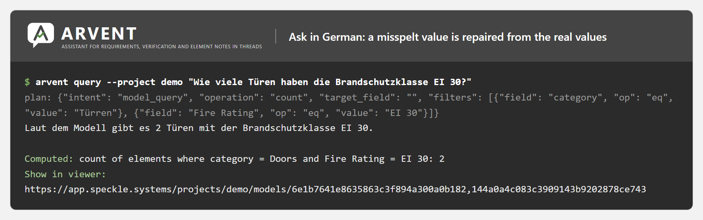
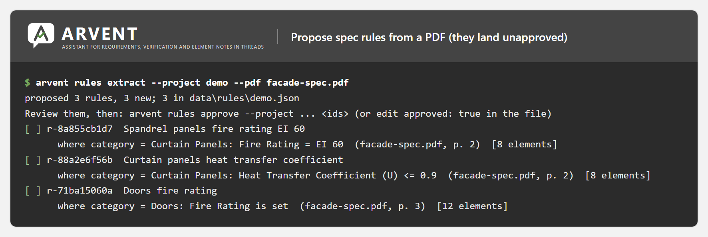
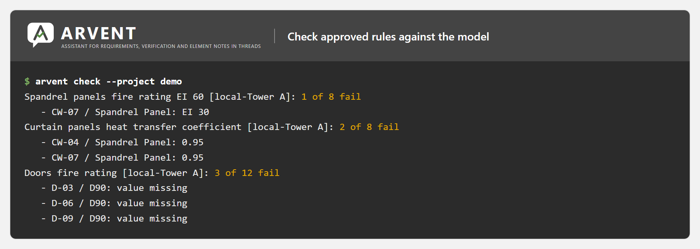
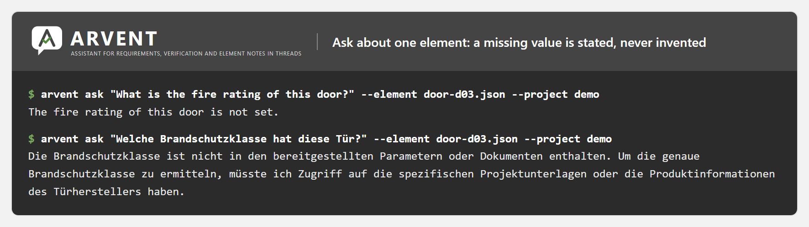

ARVENT
I connected AI to building models before it was a trend.
- Python
- FastAPI
- Speckle (GraphQL, webhooks, specklepy)
- Ollama
- Llama 3.1
- SQLite
Most people on a building project never open the 3D model, but they still have questions about it. ARVENT lets them ask in a comment, for example how many doors have no fire rating, and replies with the answer, the exact data behind it and a link that shows those parts in the model. It also checks each new version of the model against the project's written requirements.
The problem
Most people on a project never open the model, but they still have questions about it: what this panel's insulation value is, how many doors have no fire rating, whether the latest version still meets the specification.
What it does
In 2023 I connected Speckle, an open platform for sharing 3D building models, to a large language model, so project teams could ask questions about a model in plain language. ARVENT (Assistant for Requirements, Verification and Element Notes in Threads) is the 2026 rebuild. It runs on a local Llama model through Ollama, so model data and project documents never leave the machine.
It works inside Speckle's comment threads. It answers questions about a selected element from its properties and any attached specification PDF, with page references. It answers questions about the whole model. And it checks every new model version against rules taken from the specification: for each rule that fails, it opens a thread that highlights the elements involved, and it replies when a later version fixes them.
The language model never calculates anything and never writes database queries. It only fills in a structured query plan limited to the real field names; code checks and corrects that plan and runs it, and every reply shows the exact query and result. Rules from the specification are proposed by the model and run only after a person approves them.
Along the way I also built a custom connector between Speckle and Revit for a separate client, so the two platforms could exchange data more openly.
Features
- Answers questions about a selected element from its properties and any attached specification PDF, with page references
- Answers questions about the whole model, such as counts, totals and breakdowns per floor
- Keeps every element of the latest version of each model in a local SQLite database
- The language model only fills in a structured query plan; code checks and corrects it and runs it as a safe database query
- Each reply shows the exact query and result, plus a link that opens exactly those elements in the Speckle viewer
- Suggests rules from specification PDFs; a person approves them before they run
- Checks every new model version and opens one pinned thread per failing rule, highlighting the elements in the viewer
- Replies "Resolved" when a later version fixes the problem
- Missing values are reported as missing, never invented, and page references are checked against the documents
- Runs on a local Llama model through Ollama, so model data and documents never leave the machine
- Works with both Speckle data formats (version 2 Revit parameters and version 3 properties)
- Webhook server with signature checks and protection against duplicate retries; a command line for indexing, questions and checks; Docker setup with GPU support
Terms on this page
- Revit
- Autodesk's main software for designing buildings as BIM models. Most architects and engineers use it.
- Speckle
- An open platform for sharing and viewing 3D building models online.
- Language model
- An AI model that reads and writes text, like the one behind ChatGPT. Llama is a free one that can run on your own computer.
See it
Screenshots & demos






